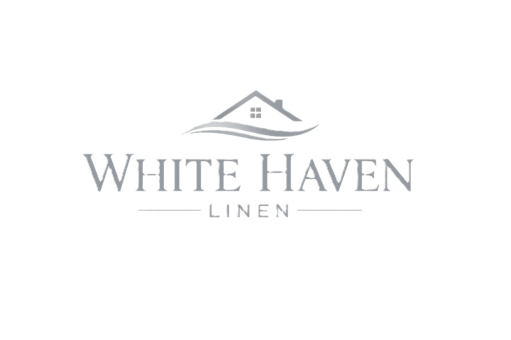

Built on textile engineering expertise, trusted international partnerships and a commitment to delivering premium textile solutions for hospitality, healthcare, retail and private label brands.

White Heaven Linen™ is the premium textile brand of MSaleemS, an Ireland-based company specialising in premium home textiles, hospitality linen, healthcare textiles, technical textiles and international product development.
Working with carefully selected manufacturing partners, we combine textile engineering expertise with practical industry experience to develop products that meet the highest standards of quality, durability and performance.
Rather than simply supplying products, we collaborate closely with customers to understand their objectives and create tailored textile solutions that support long-term business success.
Explore Our CapabilitiesBuilt on textile engineering expertise and strengthened by trusted international partnerships, White Heaven Linen™ delivers premium textile solutions that combine innovation, quality and responsible sourcing.
Our foundation is rooted in textile engineering, providing a strong understanding of fibres, fabric construction, finishing techniques and product performance across a wide range of textile applications.
We believe successful business relationships are built on trust, transparency and collaboration, working closely with customers and manufacturing partners to create long-term value.
Through continuous improvement and responsible sourcing, we strive to develop textile collections that meet evolving market expectations while supporting sustainable growth.
We combine technical expertise with commercial insight to create textile solutions tailored to each customer's unique requirements.
Deep understanding of textile materials, construction, manufacturing processes and product performance ensures practical and reliable recommendations.
Every customer has unique objectives. We listen, collaborate and develop textile solutions that align with their business goals.
Trusted international manufacturing partnerships combined with European business standa rds provide dependable sourcing with confidence.
Every successful textile collection begins with understanding our customers, selecting the right materials and maintaining consistent quality throughout the supply chain.
Every project begins by understanding product objectives, target markets, quality expectations and commercial requirements.
We collaborate closely with manufacturing partners to select fabrics, finishes, packaging and product specifications tailored to each customer.
Through quality assurance, transparent communication and reliable coordination, we help ensure consistent product delivery and customer satisfaction.
Every market has unique requirements. Our product development process balances innovation, performance, durability and commercial value while reflecting each customer's brand identity.
Carefully selecting fibres, fabrics and finishes to achieve the ideal combination of comfort, durability and performance.
Products can be developed with customised sizes, GSM, thread counts, branding, colours and packaging to meet specific market needs.
Customer feedback and market trends guide ongoing product refinement, helping us deliver lasting value and continuous innovation.
We combine technical knowledge, trusted manufacturing partnerships and responsive customer service to help businesses source premium textile solutions with confidence.
Long-term relationships with carefully selected manufacturing partners provide dependable production, consistent quality and reliable supply.
From standard collections to bespoke developments, we adapt products to suit hospitality, healthcare, retail and private label requirements.
We provide responsive communication, technical guidance and dependable customer service from concept to delivery.
Our goal is to become a trusted textile partner that supports the continued growth and success of every client.
Years of Textile Expertise
Manufacturing Partnerships
Premium Textile Products
European Business Headquarters
We believe successful partnerships are built on trust, transparency and shared goals. Working closely with customers, suppliers and manufacturing partners enables us to deliver textile solutions that meet international expectations for quality, reliability and service.
Every collection is developed with exceptional attention to materials, craftsmanship and long-term performance.
Open communication, dependable service and mutual trust are at the heart of every relationship we build.
Working with carefully selected manufacturing partners enables us to promote responsible sourcing and consistent quality.
Whether you require luxury bedding, premium towels, hospitality linen, healthcare textiles or bespoke product development, White Heaven Linen™ is ready to become your trusted textile partner.